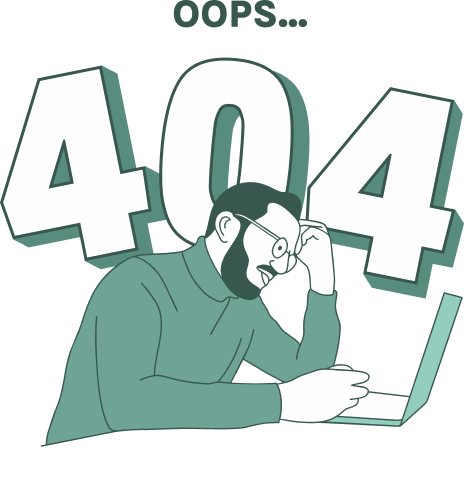

<section class="section__404 pt-5 mt-5">
  <div class="py-5 h-100">
    <div class="container">
      <div class="row pb-5 g-0">
        <div class="col-12 col-md-8 mx-auto px-3 px-md-0">
          <div class="card justify-content-center text-center d-flex card__404">
            
            <div class="card-body">
              <h5 class="h5 fw-bold text__color">Səhifə tapılmadı...</h5>
              <p class="body__text1 fw-normal text__gray-dark">Sorry, the page you are looking for doesn’t exist or has been moved. Here are some helpful links:</p>
            </div>
            <div class="card-footer bg-transparent border-0 d-inline-flex justify-content-center align-content-center align-items-center">
              <a href="#" class="btn body__text2 fw-semibold text__color ms-auto me-4 order-2 order-md-1">Geri qayıt</a>
              <a href="#" class="btn btn-primary me-auto ms-2 order-1 order-md-2">
                <span>Ana səhifəyə get</span>
              </a>
            </div>
          </div>
        </div>
      </div>
    </div>
  </div>
</section>
